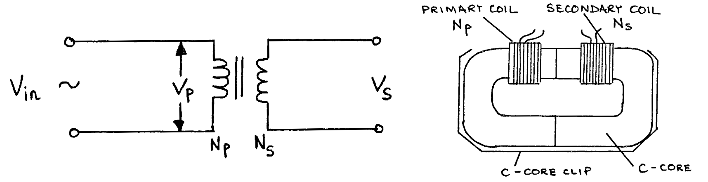
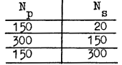
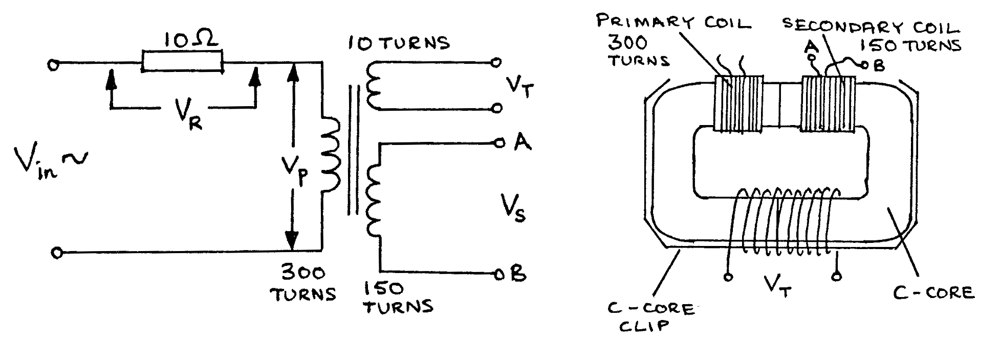

F6-2: Mutual Inductance - Transformers¶
NB: Students are advised to perform experiment F6-1 Self Inductance before attempting F6-2.
Apparatus¶
Coils 300 turns & 150 turns; wire for 20 turn & 10 turn coils; 2 iron C-cores; C-core clip; 10\(\Omega\) and 5\(\Omega\) resistors; CRO (oscilloscope); AC power supply; connecting leads (5 short).
NB: This experiment requires mains electricity.
Procedure¶
Construct the following:

Using \(N_p\) = 150 turns, \(N_s\) = 10 turns. Measure and set \(V_{in} = V_p = 4 \text{V}\) peak. Measure \(V_s\) peak. Calculate \(\frac{V_p}{V_s}\) and \(\frac{N_p}{N_s}\) and compare their values.
Repeat a) with the following numbers of turns:

Keeping \(N_p = 150\) turns and \(N_s = 300\) turns, reduce \(V_{in} = V_p\) to \(2\text{V}\) peak. Measure \(V_s\) peak, and calculate and compare \(\frac{V_p}{V_s}\) and \(\frac{N_p}{N_s}\).
Remove the clip from the iron cores, and remove one C-core. Place two coils, one on each arm of a single C-core. Again use \(N_p = 150\) turns and \(N_s = 300\) turns. Set \(V_{in} = V_p = 4\text{V}\) peak. Measure \(V_s\).
Construct the following with \(N_p = 300\) turns, \(N_s = 150\) turns, and an extra test coil of 10 turns as shown:

- Connect the CRO to measure \(V_p\) peak, and set \(V_{in}\) so that \(V_p = 4\)V peak.
- Measure \(V_R\) peak, and thus calculate \(I_p\) peak, the current in the primary circuit.
- Measure \(V_T\) peak, across the 10 turn test coil.
- Connect a \(5\Omega\) resistor between A and B, across the 150 turn secondary coil. Connect the CRO to measure \(V_p\) and adjust \(V_{in}\) so that \(V_p = 4\)V peak.
- Measure \(V_R\) peak, and thus calculate \(I_p\) peak.
- Measure \(V_T\) peak again. This should be about the same size as the value measured in procedure 2 c) above.
Theory¶
Flux \(\Phi\) and induced emf \(E\) are related by the following:
\[E_p = -N_p \frac{d \Phi_s}{dt} \label{eqnA} \tag{equation A}\]\[E_s = -N_s \frac{d \Phi_p}{dt} \label{eqnB} \tag{equation B}\]The unit of flux is the weber - Wb. When \(\Phi_s\) (the flux through the secondary coil) \(=\Phi_p\) (the flux through the primary coil), then:
\[\frac{d \Phi_s}{dt} = \frac{d \Phi_p}{dt}\]therefore:
\[\frac{E_s}{N_s} = \frac{E_p}{N_p}\]thus:
\[\frac{E_p}{E_s} = \frac{N_p}{N_s}\]If the resistances of the primary coil and the secondary coil are both low and the currents flowing through them are not too large, then:
\[V_p \approx E_p \quad \text{and} \quad V_s \approx E_s\]The 10 turn coil is used to detect if the flux \(\Phi\) in the iron core changes in the experiment. If \(\Phi = \Phi_{peak} \sin \omega t\), then \(\ref{eqnB}\) can be used to show that \(V_T\) peak \(\propto \Phi_{peak}\), provided that \(\omega\) is constant.
Analysis¶
- Why, in experiment 1a) to 1c), are the two calculated ratios not exactly equal (hint: use the theory, and the fact that the primary coil has some resistance)?
- Use the theory to explain the result of procedure 1 d).
- According to Lenz’s Law, the induced current in the secondary coil in the procedure 2 d) is in such a direction so as to reduce the flux in the core. However procedure 2 f) shows that the flux remains approximately constant. How is this possible (hint: consider the primary coil)?
- Give an explanation in terms of power flow for the change in \(I_p\) produced as a result of connecting the \(5\Omega\) resistor to the secondary coil.
- These coils are simple electrical transformers. What are the causes of power loss in a transformer, and how can they be minimised?
- All electricity supply companies use transformers in their power distribution systems. Explain, giving reasons, how they are used.